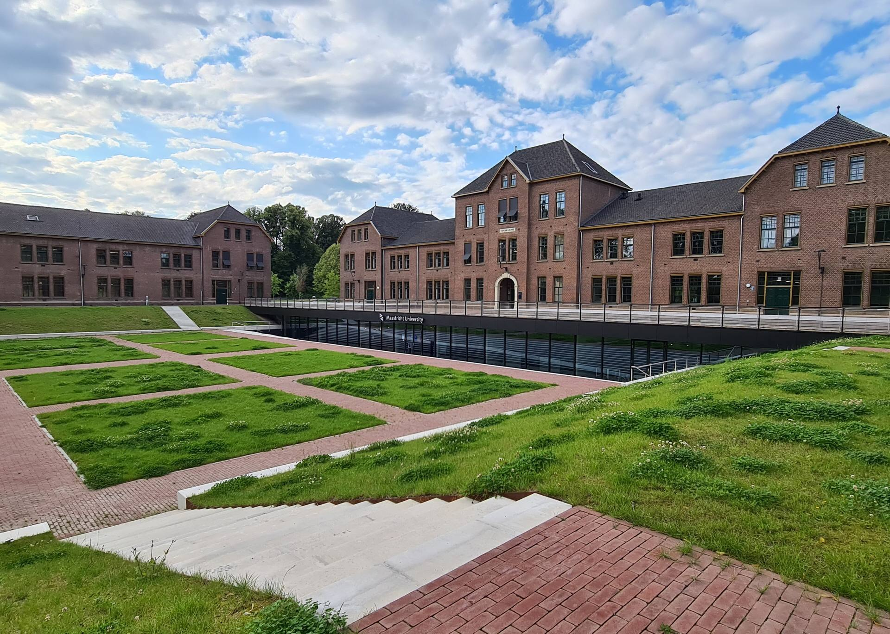

Your student voice at Maastricht University
Since 2003, NovUM has turned what students experience into real change at the university and in Maastricht. We are the biggest student party at UM, and the only student party in Maastricht with councillors on every council.
Tapijn, Maastricht University · Photo: Kleon3, CC BY-SA 4.0
2003Founded to represent international students
7 of 7UM councils with NovUM councillors. No other student party is on all of them.
€26 millionfor a carbon-neutral UM by 2030, a target we helped secure
€16,000extra for social safety at UM
Live student poll
What should NovUM fight for next?
Tell our councillors what matters most to you this year. It's anonymous and takes five seconds, and the results show up straight away.
Who represents me?
NovUM has councillors on the University Council and on all six faculty councils. Pick your faculty to meet yours.